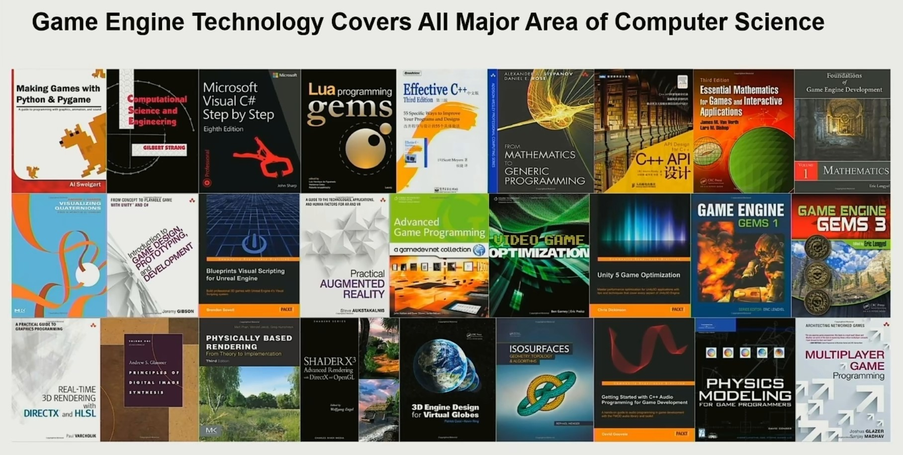
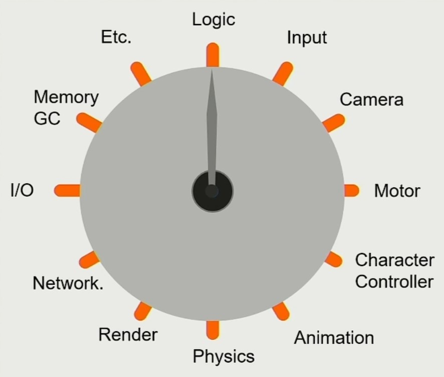

什么是游戏引擎
维基百科
游戏引擎是指一些已编写好个可编辑电脑游戏系统或者一些交互式实时图像应用程序个核心组件。箇些系统为游戏设计者提供各种编写游戏所需个各种工具，渠个目的在于让游戏设计者能容易搭快速地做出游戏程序，而弗用由零开始。
王希老师
- 黑客帝国的技术底层框架；
- 创意的生产力工具；
- 复杂性系统的艺术。
Zong
从客观来上说，游戏引擎是一堆游戏底层所需的核心模块的集合，但是如果你将其当作一个复杂的机器或者世界，那他就是人类艺术的集大成作。
尊重它，欣赏它，理解它。
游戏引擎会为你提供一套完整的开发工具链，以供你开发各种各样的游戏，甚至是影视！
怎么学习游戏引擎
游戏引擎内含了大部分现有的科学知识，那些东西需要你花一辈子去钻研才能真正理解。

所以在这里，我更多的是为你构建出游戏引擎的框架，剩下的需要你自己慢慢填补。
游戏引擎框架

从上往下依次是工具层、功能层、资源层、平台层、核心层以及贯穿始终的第三方库。
根据 VitarEngine 的代码，我将平台层放在核心层之上，意在指通过抽象 API 将核心层的代码在平台层中实现（override）和完善。
资源层
主要是要记录资源内部和资源间的引用关系以及管理资产的生命周期。
举个例子，Assimp 引入模型时会构建类似以下的存储结构。

功能层
主要是通过底层的核心模块实现引擎开发所需的主要功能，并按序 Tick 每一个功能模块。

多线程间的调度与管理也属于这一层。
平台层
主要是根据不同的游戏平台以及渲染接口异化核心层引出的 API （重载虚函数以实现多态）。
核心层
内含数学库，事件监听，日志等等核心功能。
数据结构和内存管理也属于这层，通过优化底层的数据存放以减少内存的空洞。
工具层
为开发者提供编辑器工具，比如蓝图。